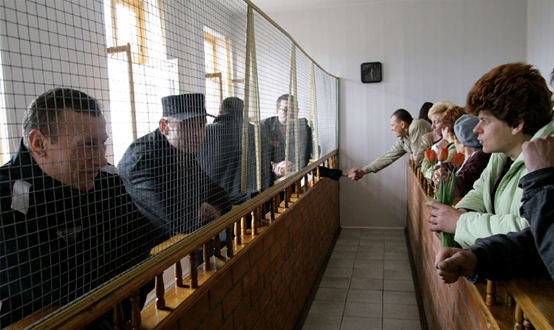

Освобождение от уголовного наказания
Уголовный закон дает возможность освобождения лица от наказания, если степень его опасности для общества невелика.
В таком случае реальное исполнение или продолжение отбывания наказания нецелесообразно.
В отличие от освобождения от уголовной ответственности, освобождение от уголовного наказания признает лицо виновным в совершении преступления, но позволяет ему не претерпевать лишения и ограничения уголовно-правового характера вовсе либо досрочно прекращает претерпевание этих лишений и ограничений.
Характерными чертами освобождения от наказания являются:
а) его применение не ограничено случаями совершения преступлений небольшой или средней тяжести, освобождение от наказания возможно и при совершении тяжкого и особо тяжкого преступления;
б) освобождение от наказания осуществляется после вынесения обвинительного приговора;
в) при полном освобождении от наказания лицо считается несудимым; если освобождают от дальнейшего отбытия определенной части наказания, то лицо признается судимым.
Глава 12 УК РФ предусматривает следующие виды освобождения от уголовного наказания:
1) условно-досрочное освобождение;
2) замена неотбытой части наказания более мягким видом наказания;
3) освобождение от отбывания наказания в связи с истечением сроков давности обвинительного приговора суда;
4) освобождение от наказания в связи с изменением обстановки;
5) освобождение от наказания в связи с болезнью;
6) отсрочка отбывания наказания;
7) отсрочка отбывания наказания больным наркоманией.
Условно-досрочное освобождение
Условно-досрочное освобождение (УДО; ст. 79 УК РФ) применяется к лицам, отбывающим принудительные работы, содержание в дисциплинарной воинской части или лишение свободы.
Основание применения этого вида освобождения от наказания заключается в признании судом факта, что осужденный для своего исправления не нуждается в полном отбывании назначенного наказания, а также возместил вред (полностью или частично), причиненный преступлением, в размере, определенном решением суда. При этом лицо может быть полностью или частично освобождено от отбывания дополнительного вида наказания.
Уголовный кодекс определяет порядок применения УДО, в зависимости от тяжести совершенного преступления и срока фактически отбытого наказания:
а) не менее одной трети срока наказания, назначенного за преступление небольшой или средней тяжести;
б) не менее половины срока наказания, назначенного за тяжкое преступление;
в) не менее двух третей срока наказания, назначенного за особо тяжкое преступление, а также двух третей срока наказания, назначенного лицу, ранее условно-досрочно освобождавшемуся, если условно-досрочное освобождение было отменено;
г) не менее трех четвертей срока наказания, назначенного за преступления против половой неприкосновенности несовершеннолетних, а равно за тяжкие и особо тяжкие преступления, связанные с незаконным оборотом наркотических средств, психотропных веществ и их прекурсоров, а также за терроризм;
д) не менее четырех пятых срока наказания, назначенного за преступления против половой неприкосновенности несовершеннолетних, не достигших четырнадцатилетнего возраста;
е) не менее одной четверти срока наказания, назначенного за преступление небольшой тяжести, для беременных женщин или женщин, имеющих ребенка в возрасте до трех лет, находящегося в доме ребенка исправительного учреждения.
Для лиц, отбывающих лишение свободы, установлен минимальный фактически отбытый срок – шесть месяцев (для лиц, отбывающих пожизненное лишение свободы, - двадцать пять лет).
За поведением лиц, условно-досрочно освобожденных, устанавливается контроль со стороны специализированных государственных органов, а в отношении военнослужащих — со стороны командования воинских частей и учреждений.
Последствия нарушения закона условно-досрочно освобожденными лицами:
а) при совершении осужденным административного правонарушения или злостном уклонении от исполнения обязанностей, возложенных на него судом, — суд по представлению уполномоченных на то органов может отменить УДО и вернуть лицо отбывать оставшуюся неотбытой часть наказания;
б) при совершении преступления по неосторожности либо умышленного преступления небольшой или средней тяжести, – суд имеет право как отменить, так и оставить УДО в силе;
в) при совершении тяжкого или особо тяжкого преступления – суд обязан отменить УДО и назначить наказание по совокупности приговоров.
Решение об УДО принимает суд на основе ходатайства осужденного и предоставленной характеристики со стороны администрации исправительного учреждения. При рассмотрении ходатайства суд учитывает поведение осужденного, его отношение к учебе и труду в течение всего периода отбывания наказания, в том числе имеющиеся поощрения и взыскания, отношение осужденного к совершенному деянию и то, что осужденный частично или полностью возместил причиненный ущерб или иным образом загладил вред, причиненный в результате преступления, а также заключение администрации исправительного учреждения о целесообразности его условно-досрочного освобождения. В отношении осужденного, страдающего расстройством сексуального предпочтения (педофилией), не исключающим вменяемости, и совершившего в возрасте старше восемнадцати лет преступление против половой неприкосновенности несовершеннолетнего, не достигшего четырнадцатилетнего возраста, суд также учитывает применение к осужденному принудительных мер медицинского характера, его отношение к лечению и результаты судебно-психиатрической экспертизы.
Замена неотбытой части наказания более мягким видом наказания
Замена неотбытой части наказания более мягким видом наказания (ст. 80 УК РФ) применяется к лицам, отбывающим содержание в дисциплинарной воинской части, принудительные работы или лишение свободы. Основание применения этого вида освобождения от наказания заключается в признании судом факта, что осужденный возместил вред (полностью или частично), причиненный преступлением, и не нарушал порядок отбывания наказания.
Применение данного вида освобождения от уголовного наказания возможно при условии фактического отбытия осужденным к лишению свободы за совершение:
а) не менее одной трети срока наказания либо не менее одной четвертой срока наказания при замене наказания в виде лишения свободы принудительными работами – за преступления небольшой или средней тяжести;
б) не менее половины срока наказания либо не менее одной трети срока наказания при замене наказания в виде лишения свободы принудительными работами – за тяжкое преступление;
в) не менее двух третей срока наказания – за особо тяжкое преступление;
г) не менее трех четвертей срока наказания – за преступления против половой неприкосновенности несовершеннолетних и создание организованного преступного сообщества;
д) не менее четырех пятых срока наказания – за преступления против половой неприкосновенности несовершеннолетних, не достигших четырнадцатилетнего возраста;
е) не менее одной четверти срока наказания – для осужденных к лишению свободы за совершение преступления небольшой тяжести беременных женщин или женщин, имеющих ребенка в возрасте до трех лет, находящегося в доме ребенка исправительного учреждения.
Как и в случае с УДО, решение о замене неотбытой части наказания более мягким видом наказания принимает суд на основе ходатайства осужденного и предоставленной характеристики со стороны администрации исправительного учреждения. При рассмотрении ходатайства суд также учитывает поведение осужденного, его отношение к учебе и труду в течение всего периода отбывания наказания, отношение осужденного к совершенному деянию и то, что осужденный частично или полностью возместил причиненный ущерб или иным образом загладил вред, причиненный в результате преступления. В отношении осужденного, страдающего расстройством сексуального предпочтения (педофилией), не исключающим вменяемости, и совершившего в возрасте старше восемнадцати лет преступление против половой неприкосновенности несовершеннолетнего, не достигшего четырнадцатилетнего возраста, суд также учитывает применение к осужденному принудительных мер медицинского характера, его отношение к лечению и результаты судебно-психиатрической экспертизы.
Освобождение от отбывания наказания в связи с истечением сроков давности обвинительного приговора суда
Освобождение от отбывания наказания в связи с истечением сроков давности обвинительного приговора суда (ст. 83 УК РФ) возможно, если обвинительный приговор суда не был приведен в исполнение (в результате халатности должностных лиц, вследствие действия сил природы, длительного нахождения осужденного в составе воинского контингента за пределами РФ, длительной болезни осужденного и т.п.) в следующие сроки со дня вступления его в законную силу:
а) два года при осуждении за преступление небольшой тяжести;
б) шесть лет при осуждении за преступление средней тяжести;
в) десять лет при осуждении за тяжкое преступление;
г) пятнадцать лет при осуждении за особо тяжкое преступление.
Течение сроков давности приостанавливается, если:
- осужденный уклоняется от отбывания наказания. В этом случае течение сроков давности возобновляется с момента задержания осужденного или явки его с повинной;
- осужденному предоставлена отсрочка отбывания наказания. В этом случае течение сроков давности возобновляется с момента окончания срока отсрочки отбывания наказания.
Вопрос о применении сроков давности к лицу, осужденному к смертной казни или пожизненному лишению свободы, решается судом. Если суд не сочтет возможным применить сроки давности, эти виды наказаний заменяются лишением свободы на определенный срок.
К лицам, осужденным за терроризм и другие преступления против общественной и государственной безопасности, сроки давности не применяются.